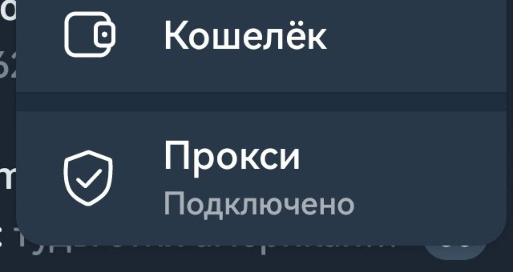
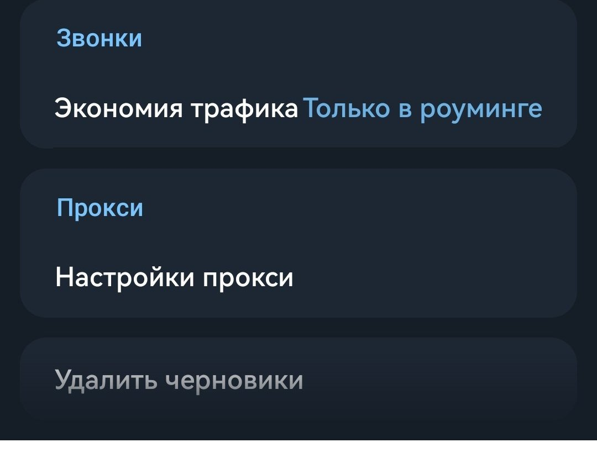
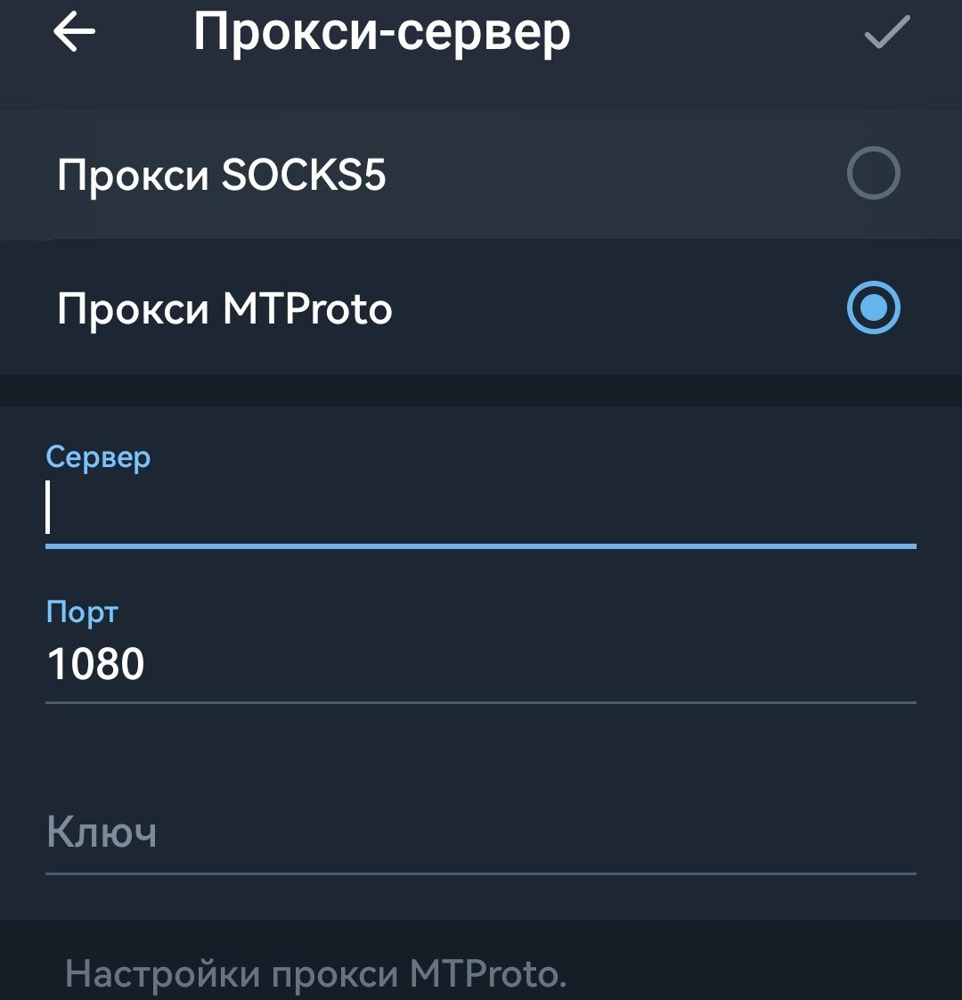

Лучшие рабочие чаты сообщества. Только целевые заявки. Без спама, кидал и прочей нечисти.
Используйте этот прокси, если Telegram работает нестабильно.
Если вам нужно проверить статус или изменить настройки позже, воспользуйтесь одним из способов ниже.

Нажмите на три точки в верхнем правом углу экрана и выберите пункт «Прокси» с иконкой щита.

Зайдите в «Настройки» → «Данные и память». В самом низу раздела выберите «Настройки прокси».

Вставьте скопированный прокси и нажмите «Включить» вверху экрана.
Либо просто нажмите
кнопку «Подключить прокси» выше — он настроится
автоматически.